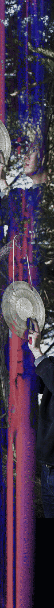

这里集结了徐程的文字谱作品，以年度更新。在文字谱系统中，怎么做成了关键、但又不是唯一关键和最终的目的。其最终的声音结果往往是游离的、不定的，甚至不存在的。但这些作品的体验往往也要运用到诸多音乐、美学（当然也包括反音乐、反美学）、社会体验的积累，也最终与文字指示系统在听觉、意识层面相遇，而形成一种特有的综合体验。这类体验总是游走在音乐与否的本质边缘。
This section brings together Xu Cheng’s text scores, updated annually. Within the system of text & event scores, the method employed is crucial, yet it is neither the key nor the ultimate objective. The final sonic outcome is often elusive, indeterminate, or even non-existent. However, the experience of these works frequently draws upon a wealth of accumulated musical, aesthetic (and, of course, anti-musical and anti-aesthetic) and social experiences; ultimately, it converges with the textual referential system on the auditory and conscious levels, giving rise to a unique, integrated experience. Such experiences invariably hover on the very edge of what constitutes music.